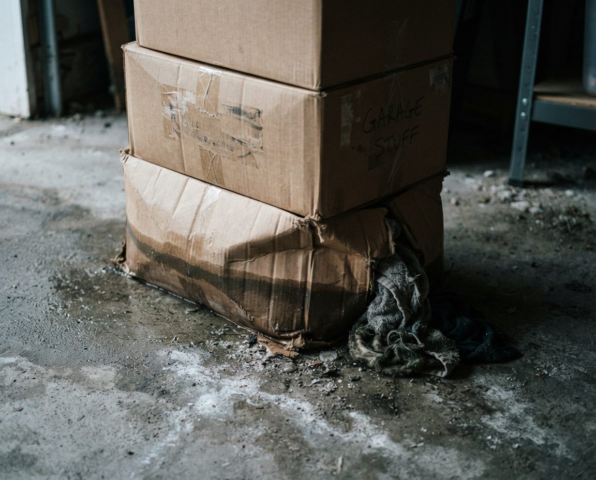

You are storing boxes in the most expensive square footage in Canada. A standard Vancouver
double garage is roughly 400 square feet of your property — and for most homeowners here,
it's holding things they'd struggle to name. We sort it, reduce it, route it properly, and
hand you back a room.
One day. Same garage.The lifting is the easy part — deciding is the work. Nothing left without the owner's say-so, and disposal was charged at cost.
~400 sq ftA standard double garage — on Canada's priciest land
#3Vancouver's rank among Canada's most rat-affected cities
1 dayMost double garages sorted in a single day
$0Markup on disposal — you pay tipping fees at cost
Why This Matters More in Vancouver
Decluttering a garage is worthwhile anywhere. In Vancouver the arithmetic is different enough
to change the decision, and it's worth being blunt about it.
You are storing boxes on Canada's most expensive land
Vancouver residential real estate is among the most expensive in North America. A double
garage of around 400 square feet is a meaningful fraction of a property worth well over a
million dollars. Whatever proportion of that garage is holding things you'd not miss, that's
the proportion of six figures of real estate you've allocated to storage. Nobody would rent a
400 sq ft unit in Kitsilano to hold paint tins — but functionally, a lot of people are.
Self-storage here is expensive, and often the wrong answer
The reflex when a garage overflows is to rent a locker. Metro Vancouver self-storage is
priced accordingly, and the trap is that it's a recurring monthly cost against a one-off
problem. Two or three years of storage rent frequently exceeds what the stored contents are
worth. Decluttering first, then storing only what genuinely justifies it, is nearly always the
cheaper path — and sometimes it removes the need entirely.
The garage might be a building site
Vancouver's laneway housing programme allows a detached home of up to roughly 900 sq ft where
the garage currently stands. That makes a cluttered back-lane garage not just wasted space but
a blocked development opportunity — and clearing it is the first physical step of any laneway
project. Doing it before a contractor mobilises costs a fraction of having a construction crew
do it at trade rates.
The climate is actively destroying what you're storing
This is the part that surprises people who've moved from a drier province. In Calgary, a box
left in the garage for five years is a dusty box. In Vancouver, it's a mouldy box. Sustained
moisture at mild temperature means cardboard softens, paper foxes, fabric mildews, metal
corrodes and adhesives fail. A lot of what we remove from Vancouver garages isn't being
decluttered — it's being written off, because it was destroyed years ago and nobody opened
the box to find out.

A typical find. The bottom box has wicked moisture straight up off the slab and collapsed — the contents were written off years before anyone opened it. Cardboard is both a moisture sponge and preferred rat nesting material.
The one-year box test
Pick any sealed box in your garage. Without opening it, write down what you think is
inside. Then open it. Most Vancouver homeowners get this wrong — and a good proportion find
the contents have been quietly ruined by damp. If you can't name what's in a box, it isn't
storage. It's deferred disposal that's charging you rent.
The Vancouver Gear Problem
Vancouver garages have a distinct composition, and it's the reason a generic decluttering
approach underperforms here. People move to this city for what's around it, and the equipment
accumulates fast.
In a single garage in Kitsilano or North Vancouver it's entirely normal to find: three or four
bikes plus a spare frame, a road bike nobody has ridden since a knee injury, two paddleboards,
a kayak, ski and snowboard equipment for a family of four across several sizes, hiking and
camping kit for both car camping and backcountry, wetsuits, a rack system for a car that has
since been sold, and a rack system for the current one. Very little of it is used year-round,
all of it is bulky, and much of it is expensive enough that nobody wants to make the call.
Our approach to gear specifically:
Sort by season and by frequency, not by type. The question isn't "is this
ski gear" — it's "did anyone use this last season." Gear last used two seasons ago almost
never gets used again.
Surface duplicates side by side. Nobody realises they own five sleeping
bags until the five sleeping bags are lined up on the driveway. Physical comparison does the
persuading that argument can't.
Check condition before sentiment. A wetsuit that's spent six Vancouver
winters on a concrete floor has usually perished. Neoprene, foam, adhesives, rubber and
webbing all degrade in sustained damp — so a lot of "I'll keep it just in case" gear is
already unusable, and knowing that makes the decision easy.
Route bikes properly. Vancouver has strong bike reuse channels, and given
that the city has the highest bike theft rate per capita among major Canadian cities,
getting a usable bike back into circulation legitimately is genuinely worth the extra stop.
Store what stays off the floor and off the wall bottom. Which is where our
organisation and storage services take over.
What Should Never Be Stored in a Vancouver Garage
This list is climate-specific. Half of it would be fine in a prairie garage.
Items that do not survive an unheated Vancouver garage, and what to do instead.
Don't store
What happens to it here
Better option
Photographs & albums
Emulsion sticks, images bloom with mould, adhesive pages fail
Indoors; digitise the irreplaceable ones
Documents & books
Foxing, warping, mould through the block; often unsalvageable
Indoors, or scanned and shredded
Cardboard boxes of anything
Softens, collapses, wicks moisture and hosts rodents
Sealed opaque bins, lifted off the floor
Clothing, linens, sleeping bags
Mildew and permanent odour within one wet season
Vacuum bags indoors, or airtight bins on shelving
Mattresses & upholstery
Absorbs moisture; becomes a mould reservoir
Dispose ($20/unit) — storing one is rarely worth it
Electronics
Condensation on boards, corroded contacts, swollen batteries
Indoors, or return free to a stewardship depot
Wine
Temperature swings and damp destroy labels and corks
Direct rodent attractant — the single worst offender
Sealed metal containers, or indoors
Paint (freezing years)
Emulsion separates; unusable after a hard cold snap
Use it, or return free to Product Care
Propane & fuel cans
Fire and bylaw risk; restricted under BC Fire Code
Minimise; store per code, never in a parkade
Clutter, Rats and the City's Own Advice
We raise this on nearly every Vancouver job, and it lands harder than any tidiness argument.
Vancouver ranks among the most rat-affected cities in Canada. The roof rat — an agile climber
— specifically favours garages, sheds, carports and attics, and the region's mild wet winters
keep rats active and breeding for longer stretches than in colder cities. The City of
Vancouver's own guidance to residents is unambiguous: remove clutter and rubbish from the yard,
garage and carport to limit rodents.
The mechanism is harbourage. Rats need undisturbed cover to nest — and a garage packed with
stacked cardboard, piled fabric, old furniture and boxes nobody has moved in years is
close to purpose-built. Cardboard in particular is both nesting material and moisture sponge.
Two practical notes. First, the City and Vancouver Coastal Health are not responsible for
pests on private property — under the standards of maintenance bylaw, that's the owner. Second,
decluttering is prevention, not treatment: if you already have an active infestation, get a
licensed pest control operator to seal entry points first. We'll tell you if that's what we're
looking at, and we'd rather lose the booking than clean a garage that's about to be re-colonised.
Our Five-Zone Decluttering Method
The lifting isn't the hard part. Deciding is. Our method is built to keep decisions moving
without anyone feeling rushed into something they'll regret.
1
Walkthrough and rules of engagement
Before anything moves we agree the boundaries: what's definitely staying, what's definitely going, what needs a second opinion, and who has the final say. We also identify anything hazardous, anything possibly valuable, and anything requiring an executor's or partner's sign-off.
2
Full extraction to five zones
Everything comes out onto tarps and lands in one of five zones: Keep, Donate, Recycle/Stewardship, Dispose, and Undecided. The Undecided zone is deliberate — it lets a hard call be deferred without stalling the whole job, and it's revisited at the end when momentum makes it easier.
3
Categorise and surface duplicates
Keep items are grouped by category and laid out together. This is where the real reductions happen: four hammers, five extension cords, three identical screwdriver sets and nine partly-used tins of the same paint are obvious side by side and invisible when scattered across a garage.
4
Condition check against the climate
Anything that's been on a Vancouver garage floor gets checked before it goes back. Perished rubber and neoprene, mould in fabric and cardboard, corroded tools, seized machinery, swollen batteries. A great deal of "keep" turns out to be already gone — which converts an emotional decision into a factual one.
5
Route, load and haul
Donations to local charities, stewardship items to free depots, qualifying reusables to the Zero Waste Centre, and only genuine waste to the landfill. Disposal is charged at cost with receipts, plus a summary of what went where.
6
Return with a damp-climate layout
Keep items go back with a plan rather than a shove: heavy and wet-tolerant low, everything vulnerable high and sealed, nothing porous on the slab, clear zones by category. Even without buying storage systems, this alone typically prevents the two-year refill.
The Categories People Find Hardest
After enough garages, the sticking points are predictable. Naming them in advance makes the
day easier.
"It was expensive"
The most common blocker, and the least useful. What something cost is a sunk cost — it doesn't
change whether keeping it is worthwhile now. The better question is whether you'd buy it again
today at its current condition and current price. In Vancouver there's a second half to this:
the storage space itself isn't free, and on this land it's expensive.
"I'll fix it"
The broken mower, the bike with the bent derailleur, the chair needing reupholstering. The
honest test is a date: if it hasn't been fixed in two years, it will not be fixed. We suggest
putting a deadline on it in writing — if it's still there next spring, it goes.
Inherited items nobody wants
Genuinely difficult, and we don't rush it. The useful reframe is that keeping something in a
damp garage where it's actively deteriorating isn't honouring it. Photographing an item, or
keeping one representative piece rather than twelve, is often the outcome people land on and
feel fine about.
Children's belongings
Bikes, toys, sports equipment and school work from children now grown. In Vancouver these have
frequently been ruined by damp already, which is sad but does make the decision clearer. Reuse
routing helps — knowing a bike is going to another child rather than a landfill changes how the
decision feels.
Renovation leftovers
Offcut lumber, half a box of tile, leftover paint, spare flooring. Keeping a small labelled
quantity for repairs is sensible. Keeping twenty sheets of drywall is expensive — at $210 per
tonne it's the priciest thing likely to be in your garage, and it deteriorates in damp anyway.
The zone people quietly surrenderIn a city with permit parking, residential restrictions and frequent vehicle break-ins, an unusable garage has a daily cost. It's also the space owners most regret losing.
Where Everything Goes
We route in order of preference — reuse first, landfill last — and it's also the order that
costs you least.
Back to you — the keep pile, returned with a workable layout.
Donation — usable furniture, tools, sporting goods, bikes and household items to local charities. No tipping fee.
Stewardship return — paint, motor oil, antifreeze, electronics, batteries, bulbs and tyres, accepted free under BC's producer responsibility programmes.
Zero Waste Centre — 8588 Yukon Street, free for a wide range of qualifying reusables and recyclables.
Recycling — metal, clean wood and yard material, at lower rates than mixed garbage.
Landfill — only what genuinely can't be diverted, charged at cost with the receipt.
Full detail on 2026 Metro Vancouver disposal rates, what's free, and how sorting cuts the bill
is on our Vancouver garage cleanout page.
How much does garage decluttering cost in Vancouver?
A single-car garage starts at $449 and typically takes half a day. A standard double runs $749–$1,100 and usually takes a full day. Estate and downsizing projects start at $1,200 and are quoted in phases. Pricing is labour hours plus disposal at cost — we don't mark up tipping fees, and sorting properly usually cuts them roughly in half.
Why is this worth more in Vancouver than elsewhere?
Because of what the space is worth. Vancouver has among the highest residential real estate values in North America, and a 400 sq ft double garage is a meaningful share of your property's value. Using it to store things you no longer want is the most expensive storage decision most homeowners here make. Add high regional self-storage rents and the possibility of a laneway home, and the case for reclaiming the space is stronger here than almost anywhere in Canada.
What should never be stored in a Vancouver garage?
Anything paper, fabric or cardboard, unless it's genuinely airtight and off the floor. Sustained moisture means cardboard is both a moisture sponge and preferred rat nesting material. Also avoid photographs, documents, electronics, instruments, wine and anything with adhesive bindings — books and photo albums are usually unsalvageable after two Vancouver winters on a garage floor. If it matters to you, it doesn't belong in an unheated coastal garage.
Do you help decide what to keep, or just remove things?
We help decide — that's the actual work; the lifting is the easy part. We use a structured sort that keeps decisions moving without pressure: everything is categorised, duplicates are surfaced side by side so you can see you own four identical hammers, and genuinely hard items go to an Undecided pile rather than stalling the job. Nothing leaves without your say-so.
Does clutter really attract rats here?
Yes, and the City of Vancouver says so directly: remove clutter and rubbish from the yard, garage and carport to limit rodents. Vancouver ranks among Canada's most rat-affected cities and roof rats specifically favour garages and sheds. Clutter provides harbourage — undisturbed nesting space and cover. A cluttered Vancouver garage isn't just untidy, it's habitat, and pest control on private property is the owner's responsibility.
How long does it take?
Single-car: typically half a day. Standard double: a full day. Estate, downsizing and hoarding-level projects run two to four days, phased so you can stop after any stage. The variable is rarely volume — it's decision fatigue, which is why we front-load the easy calls and leave the hard ones until momentum is established.
Can you declutter before a laneway house build?
Yes, and it's a smart sequence. Vancouver's laneway programme puts new homes where the existing garage stands, so it has to be emptied before anything else happens. Doing it as a standalone job before your contractor mobilises is far cheaper than a construction crew clearing it at trade rates — and the contents actually get sorted rather than skipped wholesale.
Do you work with strata townhouses and tandem garages?
Frequently. Tandem garages in Richmond, Burnaby, Coquitlam, Surrey and newer East Vancouver developments have a specific problem: long and narrow, everything comes out through one door, and the furnace and hot water tank usually eat part of the space. We also flag anything likely to breach your strata bylaws or the BC Fire Code, which restrict combustible storage in garages and parkades more tightly than most owners realise.
What happens to everything I let go?
Sorted into reuse, recycling, stewardship return and disposal, in that order of preference. Usable goods to local charities. Paint, oil, electronics, batteries and tyres to BC stewardship depots free. Qualifying reusables to the Vancouver Zero Waste Centre free. Only what genuinely can't be diverted is landfilled. You get a summary showing what went where.